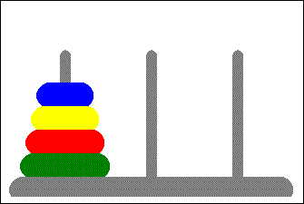

PYWS - Something to Meditate¶
Day four - May, 23
Solving the Puzzle: Towers of Hanoi¶
The puzzle was invented by the French mathematician Édouard Lucas in 1883. The puzzles is also called Lucas Tower or Tower of Brahma. It is connected to the legend of priests or monks who have to move a tower of 64 disks. The story often placed in ancient India, but also in Hanoi, Vietnam. It is not clear, if Lucas invented this story or if he used the story as an inspiration. The story continues by saying, that when the priests will finish their task, the end of the world would come.
We dont have that much time, so we consider a much smaller tower, say, 7 disks. The picture below show’s how the task is solved for 4 disks.
At the start, there are three rods, one has a number disks stacked on it, all of a differet size and ordered from the biggest at the bottom to the smallest at the top. The objective of the puzzle is to move the entire stack to another rod, obeying the following simple rules:
- Only one disk can be moved at a time.
- Only the disk at the top of a stack can be moved
- No disk may be placed on top of a smaller disk.
Solving the puzzle by hand for 4 or 5 disks is easy, but for a larger number of disks it will get difficult. Luckily we have computers and a beautiful programming language at hand.
Divide et Impera - Divide and Rule¶
Try to think of a step-by-step solution for moving a tower of 7 disks. Obviously there is no simple solution for this. If the tower would consist of only one disk, then the solution is trivial:
move(t1, t2)
But already here we have to find a representation for the real-world problem. How would a program deal with the concepts of rods and disks and piles of disks?.
For the towers its not too difficult to represent them in a language like Python: We represent the disks by simple numbers, say 1 for the smallest and 7 for the biggest disk. We take the Python list for one tower and assume we put the disks into the list:
[7,6,5,4,3,2,1] # a tower of seven disks
We need to give names to the towers and we also have to represent the empty rods (or towers) would look like this:
a = [7, 6, 5, 4, 3, 2, 1]
b = [] # tower with zero disks
c = []
The smallest disk (top of the tower) is to the right, because the Python syntax is easier for dealing with the end of the list. There are actually 2 commands:
disk = a.pop() # remove the last item of the list and assign it to a variable (disk) b.append(disk) # append the item (disk) to the end of the list
which would result in:
a = [7, 6, 5, 4, 3, 2]
b = [1]
c = []
Perfect!
Solve the one-disk-puzzle¶
Let’s implement the simplest possible solution:
def main():
a = [1]
b = []
c = []
move(a,c)
def move(src, trg):
disk = src.pop() # remove the last item of the list and assign it to a variable (disk)
trg.append(disk) # append the item (disk) to the end of the list
main()
What we have to remember: parameters in a function call are assigned the names in the function header. When the move() function is called, these assignments occur (kind of): src=a```and ``trg=c. The lists are not copied, just get another name inside the function. Therefor the pop() and append() methods operate on the original lists.
To make sure, this single disk solution is not used wrongly, we add some safety code:
...
move(a, c, len(a))
def move(src, trg, height):
# a single-disk-solution
if height > 1:
raise NotImplementedError
disk = src.pop() # remove the last item of the list and assign it to a variable (disk)
trg.append(disk) # append the item (disk) to the end of the list
...
Solve the two-disk-puzzle¶
If we try the latest version of the move() function with a = [2,1], it would raise an exception, which is far better, than going wrong silently. If we could get rid of disk 1, then we could use our move() function for the remaining disk 1. Luckily there is a third rod, which we can use as a temporary place for a disk. So we could try this:
...
a = [2,1]
...
move(a, c, b, len(a))
def move(src, trg, tmp, height):
# a two-disk-solution
if height > 2:
raise NotImplementedError
if height > 1:
move(src, tmp, trg, height-1)
disk = src.pop() # remove the last item of the list and assign it to a variable (disk)
trg.append(disk) # append the item (disk) to the end of the list
if height > 1:
move(tmp, trg, src, height-1)
...
What is this? - A function calling itself? - Yes!. Every call of a function creates a new reserved space in the comupters memory, where the function arguments and local variables, which the function creates are stored. A function calling itself just creates another instance of this space. This is called recursion: a function calls itself. And we can also look at the usage of paramters and names: The second move assigns different names to the same towers and gets a height argument, which is smaller.
So our solution
- moves a tower by moving away to
tmpwhat is on top of the largest disk,- move the single disk to
trg,- and then move what is at
tmptotrg
It works for two disks. But for three or more? - Its easy: just remove the action for height > 2, it’s not needed. What works for 2 disks, works for any (resonable) number of disks.
Recursion is for trees¶
Recursion is a form of magic. Sometimes it works, sometimes it does not. It works best, when it is applied to recursive problems, wherever nodes and branches occur, or parents and children, anything that resembles a tree or a hierarchy, e.g.:
- A file system: folders containing folders containing more folders and eventually files
- Hierarchical data structures like HTML or XML
- Manager - employee relations in a big company
- The child-parent relation in a family tree (genealogy)
- Puzzles and games
It is true, that for every recusive problem there is always a non recursive solution. It would be an extra exercise to show, how a iterative solution for the tower puzzle would look like. For sure it will be longer and less readable.
Show me, what you have¶
The solution works, and there is a nice sample on the Github repository for it (solver.py). To show the solution of the puzzle as an animation, there is a Python script which required the intstallation of the kivy package http://kivy.org When kivy is installed, it should be possible to run the hanoitower.py. This app shows the start position of a seven disk tower.
The app has a text field on top, where move commands can be entered. A move command has the format diskn c l where n is the disk number (1-7), c is the column (0-2) and l is the level (0=bottom, 6=top). There is no check, if a move is valid, so any disk can be moved to any position!
The script tries to import a solver.py module, and when this can be found (in the same folder) then the solver function is loaded. Then the text solve can be typed into the text field on top, to start the solver() function in the solver.py module. The solver() function generates the commands, which move the individual disks. If the solver gives the right commands, we can see the animated solution of the puzzle.
And yes, the speed-issue is solved, too. Inside the hanoitower.py a speed parameter (close to the top) can be set, 1 is slow, 10 is fast.
The solver example had to solve one more problem. The lists, which are used as tower representations have no name. When they are handed over as arguments between the calls of the move() function they cannot be identified by themselves. And it is not possible to use a list as a key for a dictionary, so that we could get the name from that. Remember: lists are mutable, and mutable objects can not be used as keys.
But every object also has an id, which we can get with the id() built-in function. The id of a list does not change and can be used as a dictionary key. This is used to get the real name of a list from a dictionary. With this real name, the solver function can generate print statements and move commands.
Please look at the provided solver example and try to understand, whats going on.
About Kivy¶
The Kivy framework is a package, which allows to create graphical applications in python. The installation may a bit tricky, but its worth the effort. It is not too easy to use Kivy and it would go far beyond the time we have available for the workshop. But it looks like an interesting development. The most interesting feature is the cross-platform availability. At least its claimed, that a kivy app can be run even on iOS, Android and Raspberry operating systems. Being able to write an Android app seems cool enough to give the thing a try. (I did not try to android, yet)